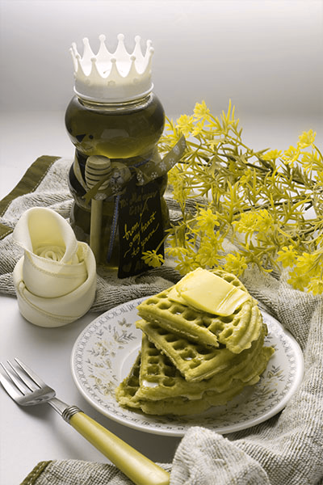

Red-green Colorblindness
In protanopia, the red cones do not work so the brightness of red, orange, and yellow is greatly reduced. A person with protanopia may learn to distinguish colors based on their perceived brightness, so the perception of blues and purples may be reduced in protanopes. If the mother is a carrier of a defective gene, then the males will have red-green defects. Conversely, if there are two defective genes, only the daughters and none of the sons of the affected males can pass on the defective genes. If there is only one defective gene, females who inherit this kind of gene are known to be carriers of that gene. However, females who inherit the gene for red-green defects from both parents are affected (5).
Normal
Vision


Protanopia